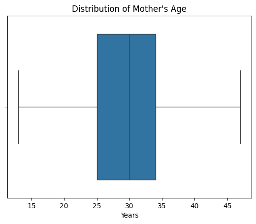
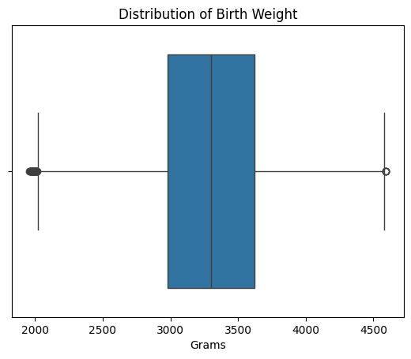
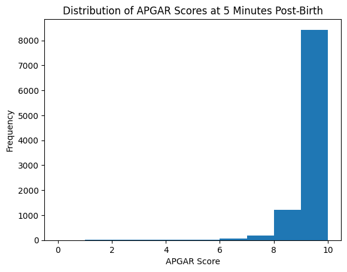
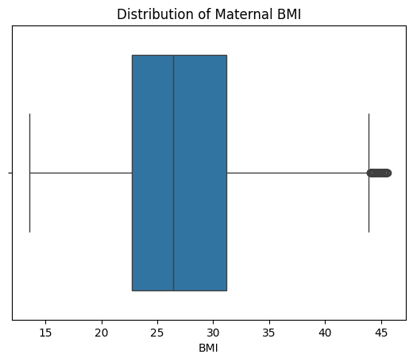
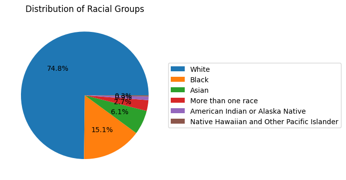
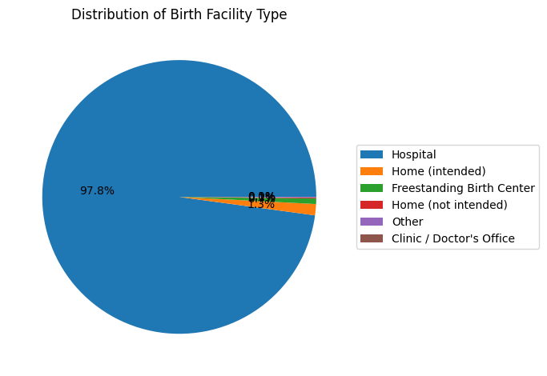
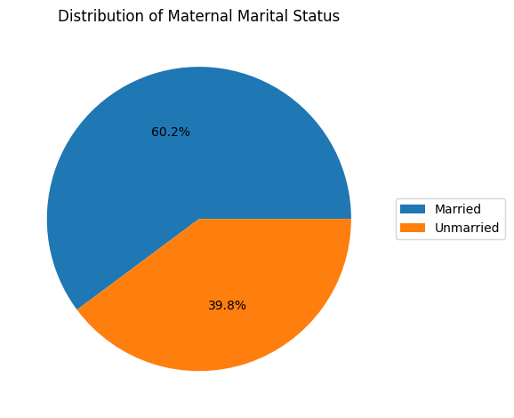
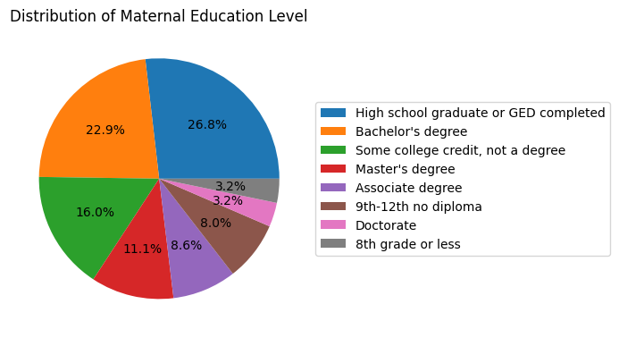

Click to see code
import pandas as pd
import matplotlib.pyplot as plt
import seaborn as sns| bfacil | mager | mrace6 | dmar | meduc | precare | bmi | rf_pdiab | rf_gdiab | rf_phype | ... | sex | combgest | dbwt | ab_aven1 | ab_aven6 | ab_nicu | ab_surf | ab_anti | ab_seiz | no_abnorm | |
|---|---|---|---|---|---|---|---|---|---|---|---|---|---|---|---|---|---|---|---|---|---|
| 0 | Hospital | 26 | White | Unmarried | Some college credit, not a degree | 6 | 24.200001 | False | False | False | ... | F | 39 | 3150 | False | False | False | False | False | False | True |
| 1 | Hospital | 20 | White | Unmarried | Some college credit, not a degree | 1 | 20.400000 | False | False | False | ... | F | 41 | 2466 | False | False | False | False | False | False | True |
| 2 | Hospital | 29 | Asian | Married | Doctorate | 2 | 19.500000 | False | False | False | ... | F | 39 | 2620 | False | False | False | False | False | False | True |
| 3 | Hospital | 18 | White | Married | 9th-12th no diploma | 4 | 33.400002 | False | False | False | ... | M | 40 | 3360 | False | False | False | False | False | False | True |
| 4 | Other | 25 | White | Married | Some college credit, not a degree | 4 | 23.000000 | False | False | False | ... | M | 39 | 2930 | False | False | False | False | False | False | True |
5 rows × 43 columns
(10000, 43)
--------
Index(['bfacil', 'mager', 'mrace6', 'dmar', 'meduc', 'precare', 'bmi',
'rf_pdiab', 'rf_gdiab', 'rf_phype', 'rf_ghype', 'rf_ehype', 'no_risks',
'ip_gon', 'ip_syph', 'ip_chlam', 'ip_hepb', 'ip_hepc', 'no_infec',
'ld_indl', 'ld_augm', 'ld_ster', 'ld_antb', 'ld_chor', 'ld_anes',
'me_rout', 'mm_mtr', 'mm_plac', 'mm_rupt', 'mm_uhyst', 'mm_aicu',
'apgar5', 'dplural', 'sex', 'combgest', 'dbwt', 'ab_aven1', 'ab_aven6',
'ab_nicu', 'ab_surf', 'ab_anti', 'ab_seiz', 'no_abnorm'],
dtype='object')bfacil object
mager int64
mrace6 object
dmar object
meduc object
precare int64
bmi float64
rf_pdiab bool
rf_gdiab bool
rf_phype bool
rf_ghype bool
rf_ehype bool
no_risks bool
ip_gon bool
ip_syph bool
ip_chlam bool
ip_hepb bool
ip_hepc bool
no_infec bool
ld_indl bool
ld_augm bool
ld_ster bool
ld_antb bool
ld_chor bool
ld_anes bool
me_rout object
mm_mtr bool
mm_plac bool
mm_rupt bool
mm_uhyst bool
mm_aicu bool
apgar5 int64
dplural int64
sex object
combgest int64
dbwt int64
ab_aven1 bool
ab_aven6 bool
ab_nicu bool
ab_surf bool
ab_anti bool
ab_seiz bool
no_abnorm bool
dtype: object| rf_pdiab | rf_gdiab | rf_phype | rf_ghype | rf_ehype | no_risks | ip_gon | ip_syph | ip_chlam | ip_hepb | ... | mm_rupt | mm_uhyst | mm_aicu | ab_aven1 | ab_aven6 | ab_nicu | ab_surf | ab_anti | ab_seiz | no_abnorm | |
|---|---|---|---|---|---|---|---|---|---|---|---|---|---|---|---|---|---|---|---|---|---|
| 0 | False | False | False | False | False | True | False | False | False | False | ... | False | False | False | False | False | False | False | False | False | True |
| 1 | False | False | False | False | False | True | False | False | False | False | ... | False | False | False | False | False | False | False | False | False | True |
| 2 | False | False | False | False | False | True | False | False | False | False | ... | False | False | False | False | False | False | False | False | False | True |
| 3 | False | False | False | False | False | True | False | False | False | False | ... | False | False | False | False | False | False | False | False | False | True |
| 4 | False | False | False | False | False | True | False | False | False | False | ... | False | False | False | False | False | False | False | False | False | True |
5 rows × 30 columns
array(['White', 'Asian', 'Black', 'More than one race',
'American Indian or Alaska Native',
'Native Hawaiian and Other Pacific Islander'], dtype=object)array(['Some college credit, not a degree', 'Doctorate',
'9th-12th no diploma', "Bachelor's degree", "Master's degree",
'High school graduate or GED completed', 'Associate degree',
'8th grade or less'], dtype=object)array(['Spontaneous', 'Cesarean', 'Vacuum', 'Forceps'], dtype=object)Index(['rf_pdiab', 'rf_gdiab', 'rf_phype', 'rf_ghype', 'rf_ehype', 'no_risks',
'ip_gon', 'ip_syph', 'ip_chlam', 'ip_hepb', 'ip_hepc', 'no_infec',
'ld_indl', 'ld_augm', 'ld_ster', 'ld_antb', 'ld_chor', 'ld_anes',
'mm_mtr', 'mm_plac', 'mm_rupt', 'mm_uhyst', 'mm_aicu', 'ab_aven1',
'ab_aven6', 'ab_nicu', 'ab_surf', 'ab_anti', 'ab_seiz', 'no_abnorm'],
dtype='object')Index(['mager', 'precare', 'bmi', 'apgar5', 'dplural', 'combgest', 'dbwt'], dtype='object')array(['Hospital', 'Other', 'Home (intended)',
'Freestanding Birth Center', 'Home (not intended)',
"Clinic / Doctor's Office"], dtype=object)



def plot_piechart(data, column, title, output_path=None):
counts = natality_df[column].value_counts()
fig, ax = plt.subplots()
wedges, texts, autotexts = ax.pie(
counts,
labels=None, # no labels on slices
autopct='%1.1f%%'
)
ax.legend(
wedges,
counts.index,
loc="center left",
bbox_to_anchor=(1, 0.5)
)
plt.title(f"Distribution of {title}")
plt.tight_layout()
if output_path:
plt.savefig(output_path)
plt.show()


